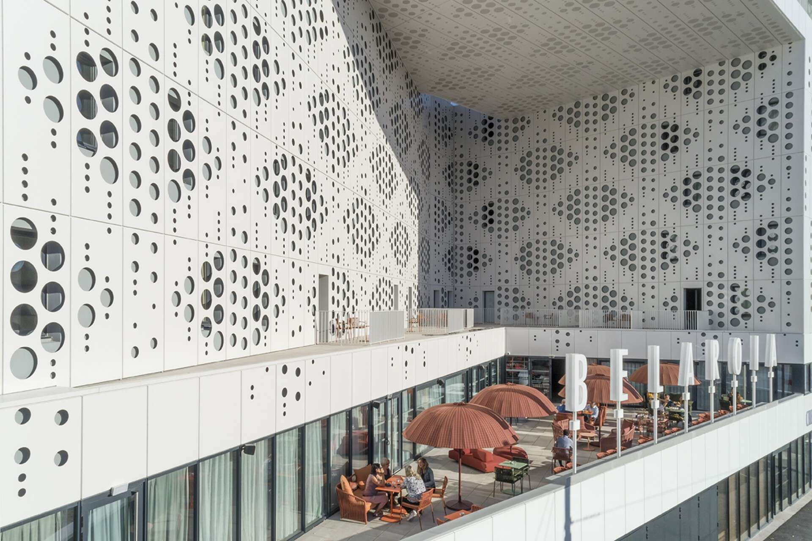
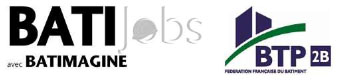
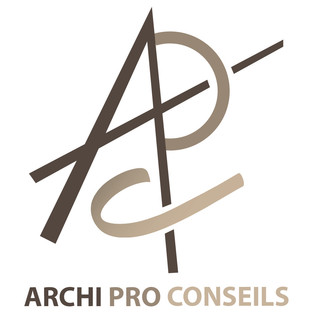
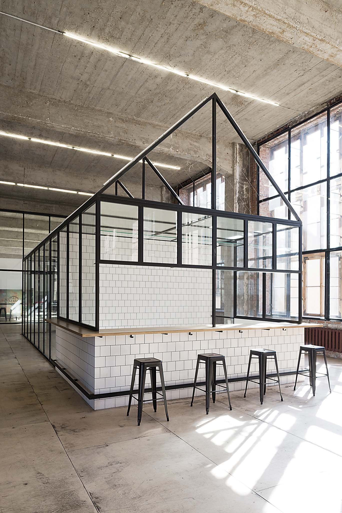

MON EXPERIENCE

Architecte en chef, Cabinet Archi-Sud (Montpellier)
2010-2013
3 ans
Conception, coordination et réalisation d'un projet de construction de logements sociaux en région Languedoc-Roussillon :
Étude de faisabilité (étude de terrain, devis) et réalisation du dossier technique.
Dessin sur ordinateur des plans en coordination avec le maitre d'œuvre et en tenant compte des impératifs économiques et réglementaires.
Sélection des prestataires techniques (électricité, maçonnerie, installation thermiques….)
Planification du chantier (coût, délais…) et dépôt du permis de construire.
Suivi de production et points d'avancement réguliers avec le client.

Chef de de projet, Agence BATIMAGINE (Paris)
2005-2010
4 ans et 2 mois
Elaboration du projet de construction de la médiathèque de Metz :
Relevés et diagnostics.
Études de faisabilité, détails techniques, esquisses et dessins sur AutoCad.
Retouches photos sur Photoshop.
Étude de faisabilité sur différents projets de logements neufs, petits équipements et projets publics (école, piscine…).


Assistant Chef de projet, Agence ARCHIPRO (Paris)
2000-2005 5 ans
Assistant Chef de projet sur différents projets publics (médiathèque, salle d'exposition…):
Mise au point de projets d'après esquisses, réalisation de métrés.
Conception de plans et exécution avec détails constructifs.
Suivi de chantier, élaboration de permis de construire et relation clientèle.